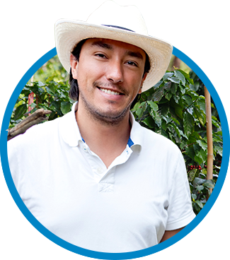
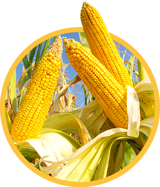
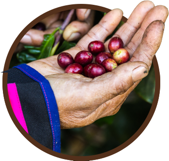

The GEVALiA Sustainability Initiative
At Gevalia, we know that every cup of our rich, never bitter coffee begins with a coffee farmer. That’s why Gevalia has partnered with TechnoServe, a world leading not-for-profit that promotes business solutions to poverty in the developing world. Our goal is to improve the quality of life for Honduran coffee farming communities.
Honduras is the largest coffee producer in Central America and it is among the poorest countries in the Western Hemisphere; it is also one of the countries most negatively impacted by climate change, with more intense rain and longer dry spells, resulting in the damage and loss of food crops. Coffee farmers often endure hunger and hardship as they struggle to live off of modest coffee earnings from the annual harvest and the basic foods they produce. Despite efforts to stretch their resources until the next year, many farming families experience periods without sufficient food, often referred to as ‘thin months’.
In partnership with TechnoServe, Gevalia is assisting Honduran coffee farming communities by delivering training and resources that will help farmers increase their income so they can better nourish their families for years to come.
LEARN MORE ABOUT TechnoServeThe Gevalia Sustainability program is supporting Honduran coffee farming communities in three ways
COFFEE FARMING EDUCATION
Helping coffee farmers increase revenue through improved coffee farming & production methods and access to new & better markets
- Teaching farmers to run their coffee farms like a business, including recognizing and capitalizing on market opportunities to sell their beans at a higher price point
- Introducing low-cost crop-management technology and techniques to increase the quantity and improve the quality of the coffee they produce
- Educating farmers on improved harvest and post-harvest handling practices to capture more value in the coffee supply chain
FOOD CROP ASSISTANCE
Helping families offset ‘thin months’ through the introduction of improved food crops and more efficient farming methods
- Introducing improved varieties of beans, a staple of the Honduran diet, that have a higher resistance to climate change impacts such as drought and flooding
- Teaching new planting and crop management practices to use land and other resources more efficiently
- Helping farmers produce additional or higher-value crops that may be enjoyed for personal consumption or sold for supplemental income
NEW JOB CREATION
Offering paid employment opportunities for local young people to become Community Trainers, delivering training & technical assistance to coffee farming families
- Providing Community Trainers, often coffee farmers themselves, hands-on education and support from TechnoServe agronomy experts
- Hiring trainers to deliver training sessions, demonstrations and assistance to farmers in their communities for a period of two and a half years
- Opening the door to future employment opportunities for Community Trainers in commercial agronomy given their valuable, hands-on experience training farmers with best practices as well as teaching farmers to manage their farms as a holistic business